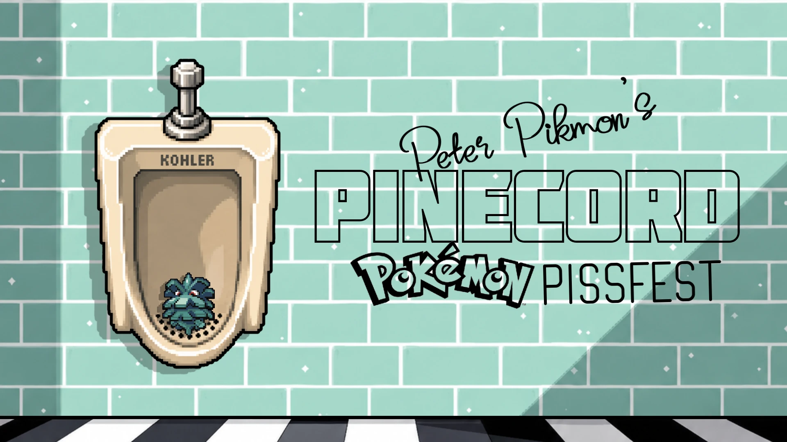

Replay Kill Tracker
Paste Pokémon Showdown replay links to count kills and deaths per Pokémon. Works for singles and doubles. Copy the table into Google Sheets or download it as a CSV.
Gambling
Bets on league games, settled from the replays. Not open yet.
Team sheets (optional)
Add a Pokepaste link or a Showdown export (Teambuilder → Import/Export) for a team. A sheet is used for every game where all six Pokémon at team preview are on it, and adds Max HP, item, ability and moves to the Per game table. With sheets, damage is also shown in HP (a team's sheet gives the HP it took and the HP its opponents dealt to it). Press Get stats after changing sheets.
Every Pokémon
How kills and damage are counted
- Direct kill: the Pokémon whose attack landed the KO hit. A spread move that KOs two Pokémon earns two kills. Destiny Bond counts as direct.
- Passive kill: indirect damage goes to whoever caused it: who inflicted the burn or poison, who set Stealth Rock, Spikes or the weather, the Leech Seed / Salt Cure / Curse user, the Rocky Helmet or Rough Skin holder, the Perish Song user.
- Self-inflicted KOs: recoil, Life Orb, confusion, the Pokémon's own weather, or a hit from its own ally. The last opponent that damaged it gets a passive kill. If no opponent ever damaged it, nobody gets the kill.
- Explosion, Memento, Final Gambit, Healing Wish: a death, no kill.
- Forfeits: Pokémon still standing are not counted as deaths.
- Random Battles have no team preview, so only Pokémon that were sent out are listed.
- Damage dealt / taken: HP lost per hit, credited like kills (direct hits to the attacker, indirect damage to its cause). Overkill doesn't count: a hit only counts the HP the target had left. Healing doesn't count, but later damage after a heal does.
- Self-inflicted damage (recoil, Life Orb, confusion, Substitute's cost, own weather, an ally's hit) counts as taken, with no dealer. Hits on a Substitute count 0; Mimikyu's Disguise breaking counts for the attacker.
- Damage in % is % of the target's max HP. Damage in HP needs team sheets: % × the target's max HP. Public replays round HP to whole %, so each hit is only accurate to about ±1% of max HP (about ±4 HP on a 400 HP Pokémon). Leaderboard HP totals are blank unless every game in the row has a sheet.
- Hazards: Hazard % / HP is the part of damage dealt done by Stealth Rock, Spikes or Steelsurge the Pokémon set; Hazard KOs is the part of its passive kills. Hazards set counts each layer. Hazards removed counts hazards cleared from its own side (Defog, Rapid Spin…), not Defog clearing its own team's hazards from the other side. After Court Change, the swapped hazards count as the Court Change user's. Hazard turns (per player): turns that ended with a hazard on the opponent's side.
- Healing: Healed % is HP a Pokémon restored to itself (Leftovers, Recover, Rest, draining moves, Poison Heal, berries, Grassy Terrain…). Heal given % is HP it restored to a teammate (Wish, Healing Wish, Lunar Dance, Heal Pulse…). Both are in % of the healed Pokémon's max HP, and in HP with team sheets. Regenerator doesn't show up as a heal in replays, so it isn't counted.
- Switches are counted on the Pokémon that left: Switches = switched out by choice, Pivots = left through its own move (U-turn, Volt Switch, Flip Turn, Parting Shot, Teleport…), Forced out = Roar, Whirlwind, Dragon Tail, Red Card, Eject Button or Emergency Exit. In after KO counts on the Pokémon that came in to replace a fainted teammate.
- Luck counts: Crits / Crits taken, Misses (its moves that missed) / Dodged (opponents' moves that missed it), Full paras, Sleep turns, Flinched, Hit itself (confusion), Effects landed (statuses and flinches its attacks caused).
- Luck score: each random roll counts as the result minus its odds, for the Pokémon it helped. A 70% move hitting is +0.3, missing is −0.7; a crit is +0.96, a normal hit −0.04; a full para is −0.75, moving through paralysis +0.25. Rolls counted: accuracy, crits, status and flinch chances of attacks, paralysis, waking up, thawing, confusion, and multi-hit moves (2–5 hit moves: 2 hits −0.65 … 5 hits +0.85; Triple Axel and Population Bomb: every hit's accuracy). Luck = its own rolls; Luck against = opponents' rolls aimed at it (high = they got lucky against it); Player luck (per game) = the player's luck minus the opponent's. About 0 means average luck. A roll that an unknown ability could have changed (a Dragonite that might have Inner Focus, a Togekiss that might have Super Luck) is skipped; a team sheet or the replay showing the ability brings it back. Items (Scope Lens, Covert Cloak…) count when the replay or a sheet shows them; multi-hit luck needs the item known, because of Loaded Dice.
- Survival: Turns on field counts the turns a Pokémon started on the field (a turn the game was forfeited at the start of doesn't count). Survived = still standing when the game ended, forfeits included. KO'd before moving = fainted during a stay on the field before it got to act (switched in and taken out the same turn, or outsped right after replacing a fainted teammate).
- Mega / Z-move: Mega and Mega turn when it Mega Evolved; Z-move and Z turn when it used one (status Z-moves show as "Z-Hypnosis" and so on). The leaderboard counts games with a Mega / Z-move and the wins among them.
- Performance and Team MVP: roughly how many KOs' worth a Pokémon did: +1 per 100% damage dealt, +1 per kill (direct or passive), +0.5 per 100% damage taken, +0.05 per turn on the field, +0.5 for not fainting. Uses %, so it works without team sheets; luck, switches and healing don't count. Team MVP (per game) is the best Performance on each team among the Pokémon brought; ties go to more kills, then more damage. The leaderboard shows MVPs (times Team MVP) and Performance / game.
- Luck in words: the team summary turns luck scores into Very unlucky / Unlucky / Fair / Lucky / Very lucky (a die with 1 to 5 pips). For a player (their luck minus the opponent's): Fair within ±0.75, Very beyond ±2. For a Pokémon: Fair within ±0.25, Very beyond ±0.75. Hover the word for the score.
- Hidden Zoroark: while disguised, Zoroark shows up as the Pokémon it copies. If its disguise never breaks, the replay can't tell them apart, so its kills and damage go to that Pokémon. Games where a team had a Zoroark that never showed itself are listed above the table and marked in Per game.